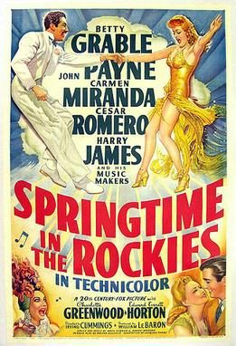

Springtime in the Rockies
Starring: Betty Grable, John Payne, Carmen Miranda
Director: Irving Cummings
Producer: William LeBaron
Springtime in the Rockies is an American Technicolor musical comedy film released by Twentieth Century Fox in 1942. It stars Betty Grable, with support from John Payne, Carmen Miranda, Cesar Romero, Charlotte Greenwood, and Edward Everett Horton. Also appearing were Grable's future husband Harry James and his band. The director was Irving Cummings.
Trivia
- According to a 20 December 1941 story outline, contained in the Twentieth Century-Fox Produced Scripts Collection at the UCLA Library, Fred Astaire and Rudy Vallée were originally considered for the male leads.
- According to the Records of the Legal Department, also at UCLA, the studio paid $1,000 for a waiver from Villa Moret Inc., holders of the copyright to the song "When It's Springtime in the Rockies", for the use of the title.
- The legal records also reveal that Twentieth Century-Fox paid approximately $1,160 to Republic Pictures, which had prior claim on the title for use on a Roy Rogers picture.
Filming Locations
- According to a The Hollywood Reporter news item, the studio intended to shoot the picture on location at Lake Louise in Canada due to "defense regulations hindering exterior shooting in the Hollywood area". Only background shots were filmed in Canada, however.
Previous Showings
3 Runs • 1 Festival
Original Billings: 1 run (November 15, 1942)
Original Run: November 15, 1942 (Sunday - Wednesday)
All runs on record (3):
- November 15, 1942 (Sunday - Wednesday)Betty Grable, John Payne
- February 9, 1997w/ The Maltese Falcon, The Big Sleep
- October 27, 200620th Century-Fox Film Festivalw/ The Gang's All Here